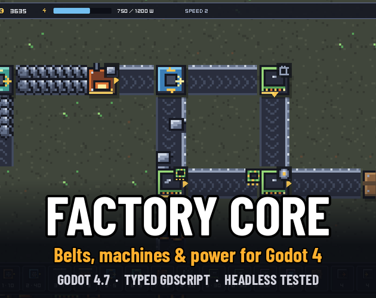
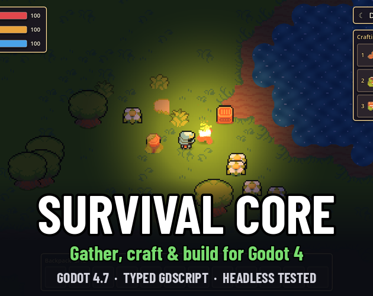
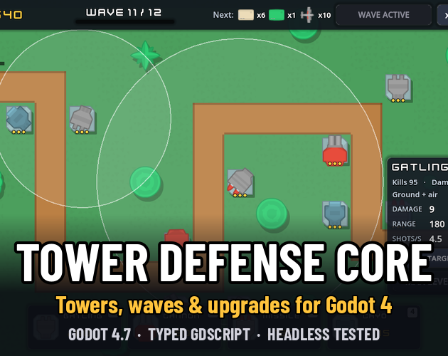
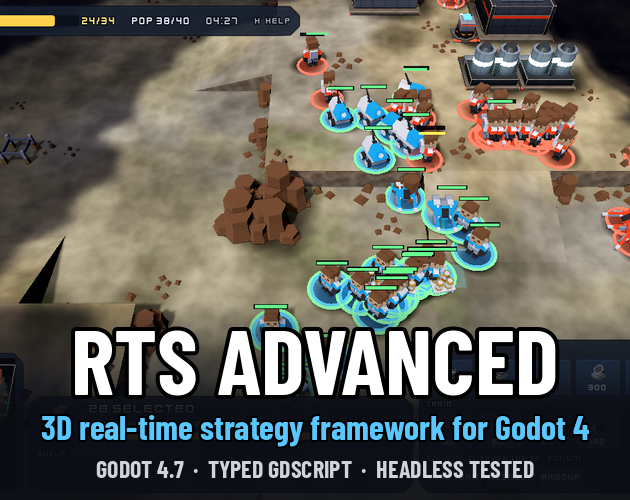
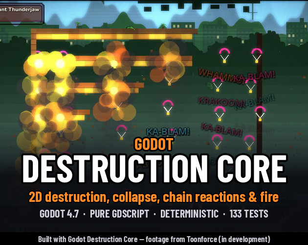

Godot 4 starter kits and project templates by huginhelm: factory/automation, survival crafting, tower defense, 3D real-time strategy and 2D destruction. Typed GDScript, headless-tested, free MIT Lite editions plus Pro editions in EUR.

Godot 4 factory / automation starter kit / template.
Lite (free, MIT): Deterministic, headless belt + machine simulation: two-lane belts with side-loading and backpressure, Mk1 recipe machines, round-robin splitter, fair merger, JSON/.tres content, stats and save/load. 65 tests.
Pro (€16.00): Godot 4.7 factory kit: belts with lanes & tunnels, machines, splitters, power grid, bottleneck view, build mode, undo and save. 249 tests.
GitHub (Lite) · itch.io (Pro)

Godot 4 survival crafting starter kit / template.
Lite (free, MIT): Hunger/thirst needs, day/night clock, slot inventory, data-driven hand crafting and gatherables as pure-logic, headless-testable systems. 48 tests.
Pro (€12.00): Godot 4.7 survival starter: hunger/thirst, gathering, slot inventory, crafting stations, grid building, chests, day/night, versioned saves. 144 tests.
GitHub (Lite) · itch.io (Pro)

Godot 4 tower defense starter kit / template.
Lite (free, MIT): The full TD logic: JSON towers/enemies/waves/map, 4 targeting modes, splash, slow, flyers, armor, upgrades and a 3-wave demo. 54 tests.
Pro (€6.00): Godot 4.7 tower defense kit: grid placement, 4 targeting modes, splash/slow, flyers, armor, upgrades, data-driven waves, playable demo. 128 tests.
GitHub (Lite) · itch.io (Pro)

Godot 4 3D real-time strategy (RTS) starter kit / template.
Lite (free, MIT): The RTS control layer: box selection, control groups, orders, formations, grid A*, production queue, capturable income points, camera, key rebinding and en/fr localization, with a primitive-shape demo. 114 tests.
Pro (€19.00): Godot 4.7 3D RTS kit: selection, formations, cliff-aware pathfinding, cover, fog of war, building, harvesting, AI opponent, save/load. 356 tests.
GitHub (Lite) · itch.io (Pro)

Godot 4 2D destruction kit / addon.
Lite (free, MIT): Destructible cell terrain, damage shapes, single detonations and deterministic structural collapse with falling pieces, rubble and crush damage, plus a two-player demo. 76 tests.
Pro (€16.00): Adds chain reactions, deterministic fire, load-based stress, image/mask import, debug overlays, command log/replay and the Fire Sale demo. 133 tests.
GitHub (Lite) · itch.io (Pro)
Built with Godot Destruction Core — footage from Toonforce (in development)